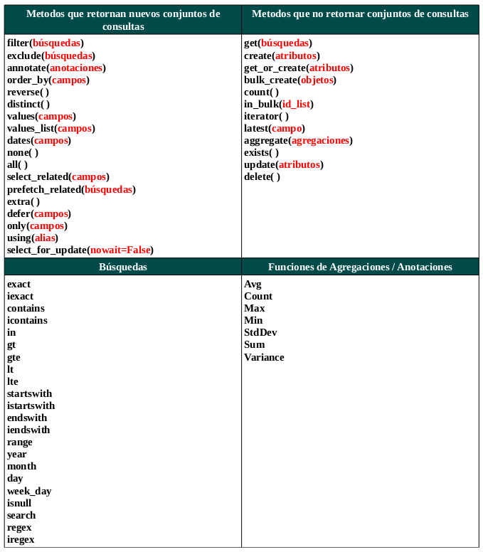

El Shell es el interprete interactivo de Python, que nos permitirá probar los modelos, hacer consultas, analizar resultados, antes de elaborar las vistas. Es muy útil si queremos ahorrar tiempo al momento de responder a los requerimientos que los usuarios de la aplicación puedan necesitar.
Para poder acceder a la shell, abrimos una terminal, nos ubicamos en la carpeta de proyecto (en donde se encuentre el archivo manage.py) y digitamos:
python manage.py shell
El resultado es muy similar a digitar directamente python en la terminal. Sin embargo en este caso tendremos acceso directamente a los componentes del proyecto de Django.
Consultas
Las consultas en base a los modelos de Django son la base de todo el desarrollo en este framework. Dichas consultas se encuentran ampliamente descritas en la documentación oficial, sin embargo la siguiente imagen presenta una guía rapida de las mismas.

Django queryset Cheatsheet
La referencia de todos estos métodos se encuentran también en la documentación oficial.
Ejemplos
Continuando con el trabajo del ejemplo del recetario modificaremos y corregiremos el archivo models.py. Eliminaremos el modelo bebida (así como cualquier rastro de el en admin.py) y agregaremos un modelo comentario. El contenido final del archivo debe ser:
from django.db import models
from django.contrib.auth.models import User
class Receta(models.Model):
titulo = models.CharField(max_length=100, verbose_name="Título", unique=True)
ingredientes = models.TextField(help_text='Redacta los ingredientes')
prepacion = models.TextField(verbose_name='Preparación', help_text='El proceso de preparación')
imagen = models.ImageField(upload_to='recetas', verbose_name='Imágen')
tiempo_registro = models.DateTimeField(auto_now=True)
usuario = models.ForeignKey(User)
def __unicode__(self):
return self.titulo
class Comentario(models.Model):
receta = models.ForeignKey(Receta)
texto = models.TextField(help_text='Tu comentario', verbose_name='Comentario')
def __unicode__(self):
return self.texto
Una vez tenemos listos los modelos, reiniciamos los mismos con:
python manage.py reset principal
Ahora estamos listos para probar las funciones del shell: